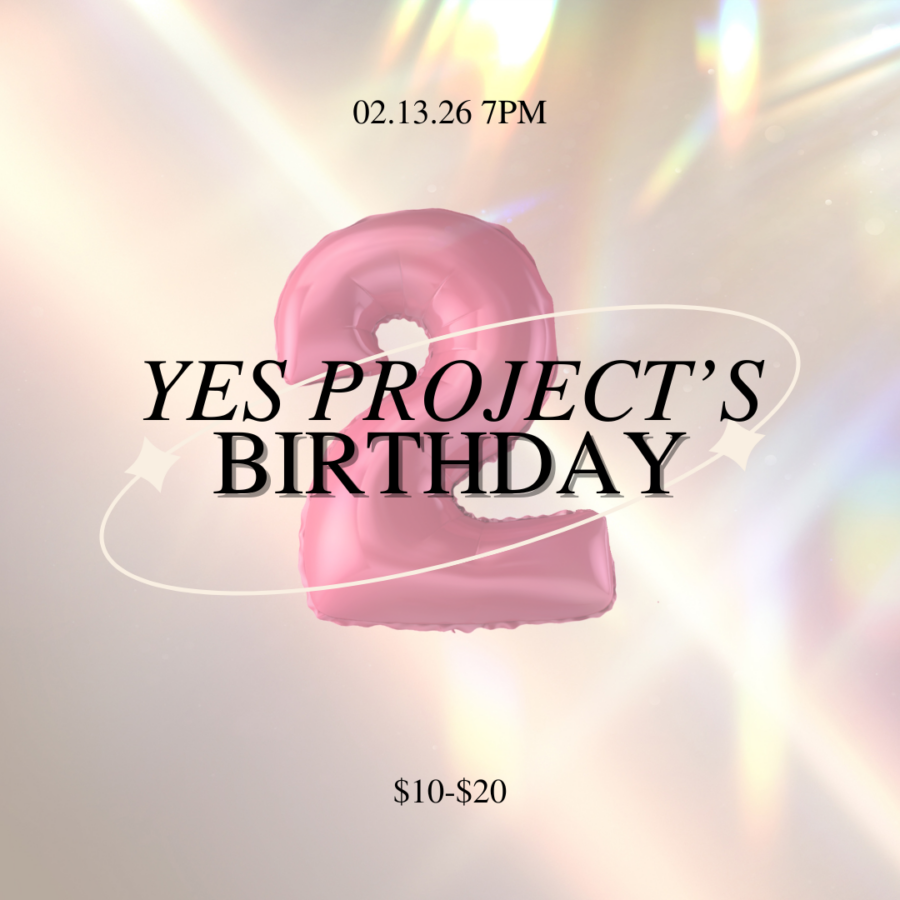

Yes Project Space turns 2!
Join us as we celebrate two years of Yes Project Space! It will be a cozy night with cake and new music by Jack Aran Smith: Akouo. You are not going to want to miss it. Tickets are sliding scale $10-$20 to support the space and the musicians. Grab your tickets here: https://flite.city/e/yes-project-turns-2